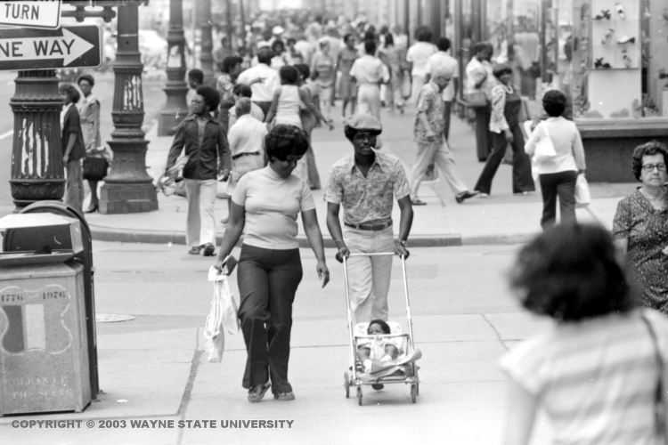

The year Color Cubes is painted.
Richard Nixon is inaugurated for his second term. US involvement in Vietnam ends. Roe v. Wade overturns states' bans on abortion. Thomas Pynchon publishes Gravity's Rainbow. The World Trade Center, designed by Detroit architect Minoru Yamasaki, opens in New York City. Picasso dies.
The mayor of Detroit is Roman Gribbs. He serves one term and is preceded by Jerome Cavanaugh and succeeded by Coleman Young.
In February, a committee called The Option Process Task Force, convened by Michigan governor William Milliken in 1972 to "examine the problems of the Detroit Metropolitan area and to recommend effective solutions to solving them," presents its findings in a report that concludes the following:
The Southeastern Michigan region is confronted with fundamental problems of increasing complexity and severity. The region possesses, among other things, excellent industrial and commercial development features, a large pool of skilled labor, renowned cultural and educational institutions, and vital communities in which to live. Like other urbanized areas, however, it is plagued by a lack of jobs (with concentrated unemployment pockets), poor public transportation facilities, concentrated sub-standard housing and segregated housing patterns, inadequate health care and recreational programs and facilities, fragmented social services and high crime rates, exacerbated by a corrections system which does not rehabilitate. These problems, at one time limited to the core city, are now having a rapidly expanding impact upon residents of adjacent and outlying communities of the region….11
See COLOR CUBES , LIVING WITH ART , NEW DETROIT and RICHARD NIXON .